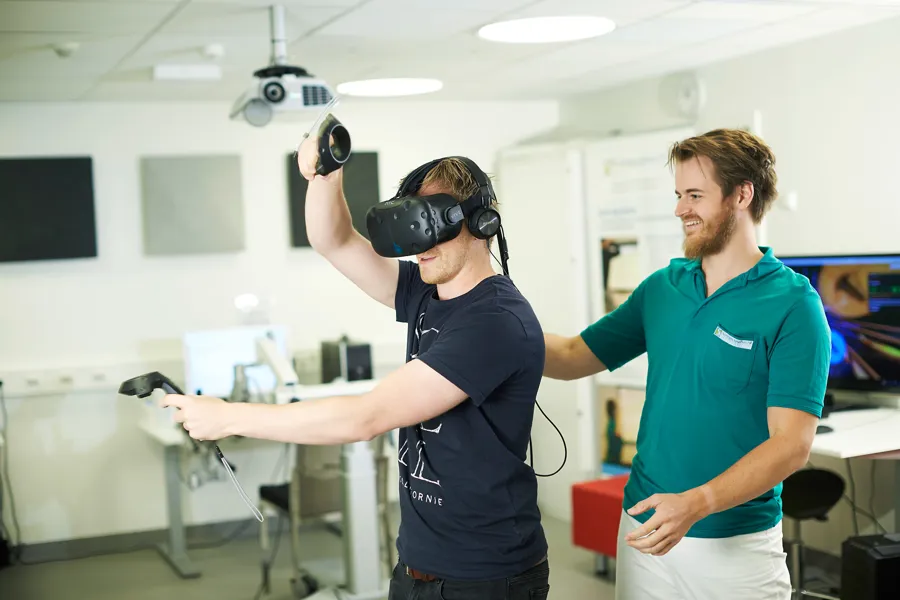

Bruken av VR briller under oprasjon
Flere sykehus ønsker å redusere bruken av sterke bedøvende medisiner. Teknologi hentet fra gaming-verdenen har blitt en løsning for å få dette til.
FOTO: TOM OLE BUAAS / NRK
- God effekt
Sykehuset Telemark er ett av få sykehus i Norge som har begynt å bruke VR-teknologi under kirurgiske operasjoner. Pasientene får bruke VR-briller for å fokusere på rolige og behagelige omgivelser mens inngrepet pågår. Dette gjør at mange føler seg tryggere og mindre stresset.
Ved å bruke VR håper sykehuset å redusere behovet for sterke og beroligende medisiner. Slike medisiner kan ha bivirkninger, og det er derfor en fordel hvis pasientene kan klare seg med mindre av dem. I tillegg kan VR bidra til en bedre opplevelse for pasienten og kanskje gjøre selve operasjonen enklere for både pasient og helsepersonell.
- VR flytter fokuset
Smerte er en subjektiv og sammensatt opplevelse. Derfor kan smertefølelsen dempes hvis vi avledes av andre sanseinntrykk, forklarer biolog Marit Aralt Skaug.Hun hadde ideen om å teste ut VR-briller som smertelindring på postoperative pasienter i 2018.Vi har sett at VR brukes mer og mer internasjonalt. Blant annet for å avlede smerteopplevelse hos barn som skal gå gjennom smertefulle prosedyrer. Da tenkte vi at dette også kunne brukes på andre type pasienter.Forskerne vet ikke sikkert hvordan VR påvirker smerteimpulsene. Men det er kjent at smerte påvirkes av følelsene våre.Den altoppslukende opplevelsen som VR kan gi, kan gjøre teknologien egnet til å trekke oppmerksomhet bort fra smerter og ubehag, sier Skaug.
- Hva er VR
Virtuell virkelighet er en illusjon, vanligvis generert ved hjelp av ulike typer informasjonsteknologi, som gir brukeren en opplevelse av å befinne seg på et annet, oppdiktet eller virkelig sted.Illusjonen behøver ikke å være komplett, men den må være tilstrekkelig naturtro til at brukeren kan leve seg inn i den ved hjelp av naturlige sanser og ferdigheter.Begrepet blir ofte forkortet til VR (Virtual Reality).

KI oppdaget 20 prosent flere krefttilfeller
Forskere er positivt overrasket over hvor mange krefttilfeller kunstig intelligens (KI) fant. Det betyr at svulsten kan fjernes tidligere.

Verdens viktigste selskap leverer tall
Er tek-oppgangen en boble? Mens Nvidia håver inn, svir kundene av penger. – Urovekkende, sier investeringsdirektør Robert Næss.

Apple lanserer live-oversetting med airpods
Ny airpodsfunksjon "live-oversetter". Apple lanserte i september 2025 "Live Translation" for Airpods. Nå kan Airpods oversette samtaler med en funksjon kalt Liveoversetting.